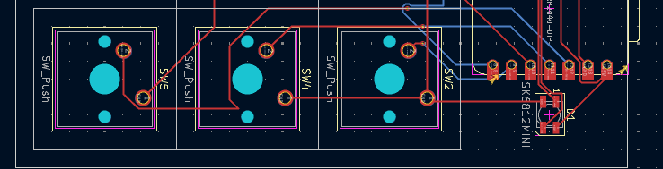
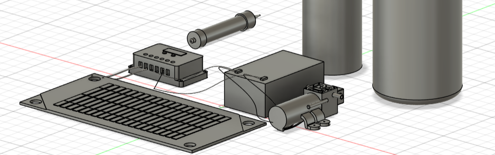
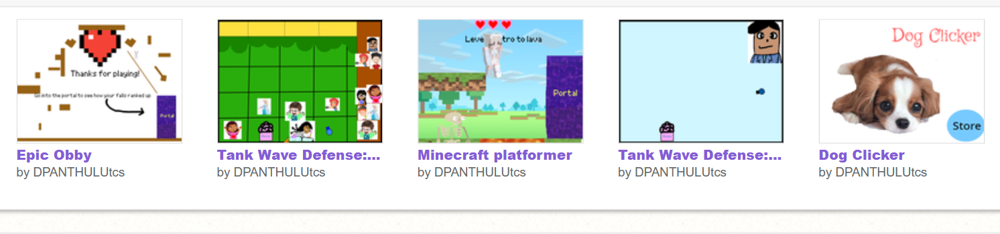
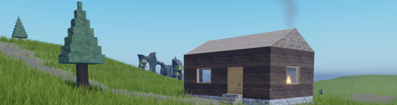

my projects
here are some of my projects!
I love to code silly websites with html, css, and a bit of javascript! (check out my github!)
here are a few examples:




roblox game from 4th grade
coded in Lua, my first coding project! baby dipa was so proud
view project →
AND I DO MORE!!!!
- art stuff :] (check out my portfolio!)
- researching aerospace engineering
- CADDING in fusion 360! check out my printables!
- making 3d models and animations in blender! check out my artstation!
- photography! check out my 500px
- pixel art! check out my pixilart!
- making music! check out my soundcloud!
- making games! check out my itch.io!
and a bunch of wips!